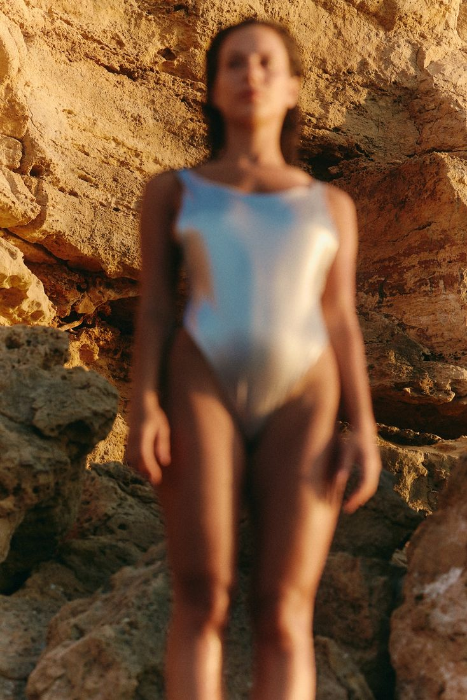

Seven constellations covering where the writing comes from, how a sentence is made, where the archive lives, what forms the writing takes, what it owes to the people it cites, when it happens, and who it reaches. Some stars are settled and running. Others are open, and are here because they are the ones a practice like this eventually has to decide.
How to read this. Drag to move; scroll to zoom. Switch between a flat 2D view, where the horizontal axis runs private to public and the vertical runs recording to generating, and a 3D view you can rotate through all three dimensions. Colour marks the constellation; larger stars carry more weight. Every star is marked running or open, and the open ones are not gaps to be embarrassed about. They are the questions a writing practice arrives at once the first ones are settled.
Read it as a list
Every star, in full, with its status and references

The curriculum spirals rather than progressing, so it is drawn as a map.
The three dimensions
Axis
Poles
X — Private ↔ Public
The notebook and the repository toward the page anyone can read
Y — Recording ↔ Generating
Writing that holds what happened, up toward writing that decides what gets made next
Z — Sentence ↔ Structure
The line, the clause and the word toward the architecture of a year
The repository is the archive. The platform is only distribution.
What the writing is held to
Checked before publishing rather than felt for. The list exists because these are failures that read as competent prose, so they survive a reread and get caught only by counting.
No bridging by geometry. No claim that two things occupy the same territory, sit at another end of something, or approach from a different angle. A spatial phrase asserts a relation instead of producing one, and there is usually no territory and no angle.
No reversal family. This covers the not-this-but-that construction and the stripped conjunction pair, where two sentences are run in sequence to do the work of one.
Em dashes under five per thousand words. A count rather than a feeling, because the em dash is the punctuation that hides a sentence which has not decided what it is.
No self-description. The writing does not announce what it is about to do, and it does not tell the reader how to receive it.
Star to ground under one in eight. Most of what is on the page has to be load-bearing. A memorable line surrounded by more memorable lines stops being memorable.
A 1,500 word floor, and 700 to 1,000 of body. The artists get space. The theory gets compressed. If it runs long, the framework is cut before the artists are.
Anchors checked character by character. Against the actual source, every time. AI tools produce confident, plausible and wrong citation details, and a citation carried forward from a draft is the failure most likely to reach print.
Contested reception named, not smoothed. If a debate can be documented with named critics and named positions, it goes in and stays unresolved. If it cannot be documented, the tension is described in the work rather than in the reception.
The foundational principle
The writing is where the thinking happens. It is not a record of the paintings and it is not an argument for them; the two act on the same premise through different materials, which is why neither one has to explain the other. What the writing is for is the reach past the fact toward the truth behind it, and what it demonstrates is the thinking the work came out of.